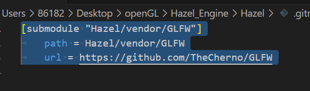
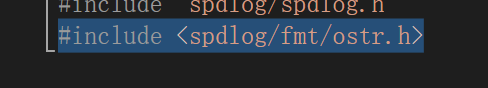
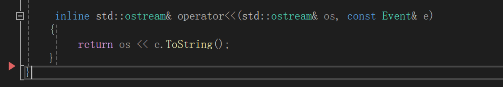
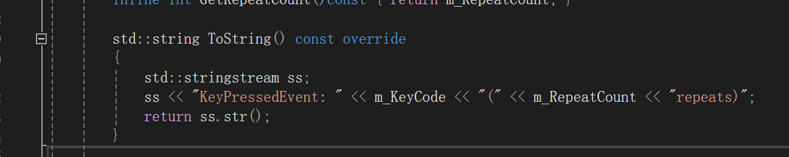

HazelEngine笔记2
在游戏引擎或者大型程序项目中我们必然离不开调式功能，处于方便我们使用了github开源的日志库作为我们的日志库（spdlog）
如果你也在跟随cherno的引擎制作，你也应该遇到了莫名其妙的错误，其实Youtobe正确的库不是给的链接（也许是时间太久，已经更新过了），你需要去cherno的引擎库里找到保存的spdlog库，那个才是正确的
首先在命令行
git submodule add https://github.com/gabime/spdlog/wiki/3.-Custom-formatting Hazel/vendor/spdlog
it submodule 是 Git 中用于管理依赖子项目或库的一种机制。
它允许你将一个 Git 仓库嵌套到另一个仓库中，便于版本控制和依赖管理。通过 submodule，可以在项目中引用其他项目的特定版本，保持项目独立更新的同时也能保持一致性。
这样你就将别人的库拉到我们的项目之下了。
我们同时也会发现
多了一个这个目录点开看
.gitmodules 是一个用于存储 Git 仓库子模块（submodule）配置信息的文件。当你在 Git 项目中添加子模块时，Git 会自动在项目的根目录生成或更新 .gitmodules 文件，记录子模块的路径和仓库 URL 等信息。
为了使用spdlog的库，我们自然需要引入对应的文件进入源文件。
添加查找目录，在log.h引入对应的spdlog的include中头文件

综上我们成功获取了需要的spdlog
接下来是如何使用这个日志库
我们就根据当前的代码解释
//log.h
#pragma once
#include "hzpch.h"
#include "Core.h"
#include "spdlog/spdlog.h"
#include <spdlog/fmt/ostr.h>
namespace Hazel
{
class HAZEL_API Log
{
public:
static void Init();
inline static std::shared_ptr<spdlog::logger>& GetCoreLogger() { return s_CoreLogger; }
inline static std::shared_ptr<spdlog::logger>& GetClientLogger() { return s_ClientLogger; }
private:
static std::shared_ptr<spdlog::logger> s_CoreLogger;
static std::shared_ptr<spdlog::logger> s_ClientLogger;
};
}
//Core log macros
#define HZ_CORE_ERROR(...) ::Hazel::Log::GetCoreLogger()->error(__VA_ARGS__)
#define HZ_CORE_WARN(...) ::Hazel::Log::GetCoreLogger()->warn(__VA_ARGS__)
#define HZ_CORE_INFO(...) ::Hazel::Log::GetCoreLogger()->info(__VA_ARGS__)
#define HZ_CORE_TRACE(...) ::Hazel::Log::GetCoreLogger()->trace(__VA_ARGS__)
#define HZ_CORE_FETAL(...) ::Hazel::Log::GetCoreLogger()->fetal(__VA_ARGS__)
//Client log macros
#define HZ_ERROR(...) ::Hazel::Log::GetClientLogger()->error(__VA_ARGS__)
#define HZ_WARN(...) ::Hazel::Log::GetClientLogger()->warn(__VA_ARGS__)
#define HZ_INFO(...) ::Hazel::Log::GetClientLogger()->info(__VA_ARGS__)
#define HZ_TRACE(...) ::Hazel::Log::GetClientLogger()->trace(__VA_ARGS__)
#define HZ_FETAL(...) ::Hazel::Log::GetClientLogger()->fetal(__VA_ARGS__)
- 头文件
**hzpch.h**：Hazel 的预编译头文件，包含常用头文件。
**Core.h**：Hazel 核心模块的相关定义，可能包含一些宏（比如 HAZEL_API 宏）。
**spdlog/spdlog.h**：spdlog 的核心头文件，用于日志功能。
**spdlog/fmt/ostr.h**：提供了对输出流（如 std::ostream）的支持，允许通过 spdlog 格式化输出自定义类型。这个头文件允许我们输出对象是自定义类型，只要我们重载输出流函数，使其输出为字符串即可。但是最新的spdlog库显然修改了这个无法使用。
- 设置了俩个静态的共享指针，一个是引擎，一个是客户端应用的日志。
- 同时设置俩个静态的函数用来获取日志记录器的引用
首先我们分析以下为什么使用共享指针？
- 全局访问
std::shared_ptr是一种智能指针，允许多个所有者共享同一个对象的所有权。在这个例子中，s_CoreLogger和s_ClientLogger这两个日志记录器是静态成员，需要在整个程序生命周期内使用，因此需要保证这些对象的生命周期能够被多个部分安全地共享。
- 自动管理内存
td::shared_ptr提供了自动内存管理功能。当没有任何对象持有该指针时，shared_ptr会自动销毁并释放内存。在这个上下文中，std::shared_ptr可以防止日志记录器在某些部分还在使用时被提前销毁。（智能指针一方面就是为了防止内存的泄露问题）
- 线程安全
std::shared_ptr是线程安全的，至少在对其引用计数的操作（如拷贝构造或赋值）上是安全的。这在日志记录器的场景下尤为重要，因为日志系统可能会被多个线程并发访问，而共享指针恰恰能被多方引用，同时避免多线程下的竞争。
- unique_ptr
这个是唯一指针，不允许被多个对象共有，所以显然不合适这里的日志系统设计
为什么都是static？
其实就算一种单例模式吧，保证全局的唯一性，减少资源的浪费。
- 解释一下宏定义。
#define HZ_CORE_ERROR(...) ::Hazel::Log::GetCoreLogger()->error(__VA_ARGS__)
显然是为了简化代码和一些差别，方便后期的维护和修改。
HZ_CORE_ERROR(...) 定义了一个名为 HZ_CORE_ERROR 的宏，使用了变长参数 (...)。这意味着该宏可以接受任意数量的参数。
__VA_ARGS__ 是一个特殊的宏参数，表示宏接受的所有参数。在宏被调用时，所有传入的参数都会被替换为 __VA_ARGS__。
长参数和 __VA_ARGS__ 提供了一种灵活的方式来定义函数和宏，使得它们能够处理不定数量的输入。这种特性在实际编程中非常有用，尤其在日志记录、调试信息。
这里顺便提一下格式化字符串（fmt——format string）
格式化字符串
在 C 和 C++ 中，格式化字符串是一种文本字符串，其中包含格式说明符（如
%d、%f等），用于指定如何格式化要输出的变量。以下是一些常用的格式说明符：
%d：用于输出整数（十进制）。%f：用于输出浮点数。%s：用于输出字符串。%c：用于输出单个字符。%x：用于输出十六进制整数。使用也很简单
printf("The values are: %d, %f\n", number, decimal);在输出的字符串中利用格式说明符，然后根据顺序依次给出对应类型的变量。
优点
- 简化代码：通过使用宏，开发者不需要每次记录错误日志时都编写冗长的代码。宏提供了一个简洁的接口，提升了代码的可读性和可维护性。
- 一致性：所有使用
HZ_CORE_ERROR宏的地方将遵循相同的日志记录格式和方法，确保一致性。 - 便于修改：如果未来需要改变日志记录的实现方式，只需修改宏定义，而不需要在代码的多个地方进行更改。
//log.cpp
#include "hzpch.h"
#include "Log.h"
#include "spdlog/sinks/stdout_color_sinks.h"
namespace Hazel
{
std::shared_ptr<spdlog::logger> Log::s_CoreLogger;
std::shared_ptr<spdlog::logger> Log::s_ClientLogger;
void Log::Init()
{
spdlog::set_pattern("%^[%T] %n: %v%$");
s_CoreLogger = spdlog::stdout_color_mt("HAZEL");
s_CoreLogger->set_level(spdlog::level::trace);
s_ClientLogger = spdlog::stdout_color_mt("App");
s_ClientLogger->set_level(spdlog::level::trace);
}
}
1.由于定义的是类内静态变量，所以定义需要在函数全局定义一下才能为其分配内存。
2.初始化Init（）
1. 设置日志格式
- 设置日志的输出格式。
这里设置了日志的输出格式：
%^：启动颜色。- 【
%T：输出时间（精确到秒）。- 】
%n：记录器名称（例如 “HAZEL” 或 “App”）。%v：实际的日志消息。%$：结束颜色。
这使得每条日志输出类似于：
[12:34:56] HAZEL: Some log message
2.创建核心日志记录器
s_CoreLogger = spdlog::stdout_color_mt("HAZEL");
这行代码创建了一个名为 "HAZEL"（记录器名称） 的控制台日志记录器（带颜色输出），用来记录 Hazel 引擎内部的日志。
注意是控制台记录器，其会将日志直接输出到控制台。
当然也可使将日志输出到文件里，相关的[创建细节](2. Creating loggers · gabime/spdlog Wiki)
i里面涉及到了sink和logger的概念和关系
Logger（日志记录器）
- 定义：
logger是用来生成日志消息的对象，它通常会有一个或多个 sink 作为其输出目标。每个logger可以记录不同级别的日志消息（如info、warn、error等）。- 功能：
logger负责将日志消息传递给与其关联的 sink(s)。它提供了一些方法用于记录不同级别的日志，如logger->info("message")、logger->error("error message")等。2. Sink（日志输出目标）
- 定义：
sink是接收和处理日志消息的对象，负责将这些消息输出到指定的目标（如控制台、文件或网络等）。- 功能：每个 sink 可以配置不同的输出格式、日志级别等。
sink会将接收到的日志消息实际写入到目标位置。3. 它们之间的关系
- 日志输出：
logger与一个或多个sink关联在一起，logger生成的日志消息会被传递到其关联的sink，然后由sink将日志消息输出到最终的目的地。- 组合：通过组合多个 sink，开发者可以将同一条日志消息同时输出到多个目标。例如，你可以将日志同时输出到控制台和文件，确保所有重要信息都被记录。
示例代码
下面是一个简单的示例，展示如何创建
logger和sink，并将日志输出到多个目标：make_shared是一个比new内存管理更加优秀的创建新对象的方法
#include <spdlog/spdlog.h> #include <spdlog/sinks/stdout_color_sinks.h> #include <spdlog/sinks/simple_file_sink.h> int main() { // 创建控制台 sink auto console_sink = std::make_shared<spdlog::sinks::stdout_color_sink_mt>(); console_sink->set_level(spdlog::level::info); // 设置输出级别为 info // 创建文件 sink auto file_sink = std::make_shared<spdlog::sinks::simple_file_sink_mt>("logs.txt"); file_sink->set_level(spdlog::level::debug); // 设置输出级别为 debug // 创建 logger，并将两个 sinks 组合 auto logger = std::make_shared<spdlog::logger>("multi_sink", spdlog::sinks_init_list{console_sink, file_sink}); spdlog::set_default_logger(logger); // 设置默认 logger // 记录日志 logger->info("This is an info message."); // 输出到 console 和 file logger->debug("This is a debug message."); // 只输出到 file return 0; }
3. 设置日志级别
s_CoreLogger->set_level(spdlog::level::trace);
这里设置了日志的详细程度为 trace，即最详细的日志级别。这意味着 Hazel 引擎的所有日志（包括 trace、debug、info、warn、error 等级别的日志）都会被记录。
其他的没啥了，有疑惑多看看文档和问问gpt
针对自定义事件的日志，我们在log.cpp中我们引入这个头文件
面对Event类的事件，我们只需要重载Event的**<<**流符号，然后确保重载后输出的string，我们就可以自定义输出类（仅限于这个spdlog库，最新的有改动）
然后我们每个子类中再实现其ToString(),就成功保证这个类输出字符串，上传到日志。
最后我们只需要这样即可
HZ_CORE_INFO(e);//e为event的一个派生子类实例。